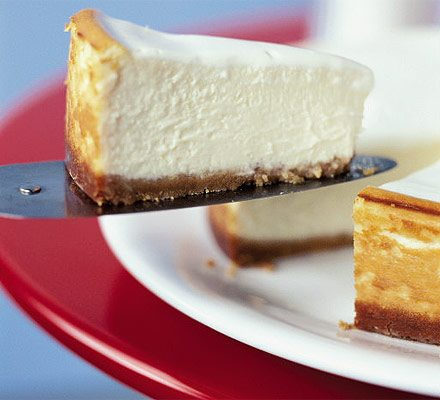

Cheesecake

Description
This deliciously rich and creamy Classic New York-Style Cheesecake is a dessert-lover's dream come true. With its buttery graham cracker crust, smooth and velvety cream cheese filling, and a touch of tanginess from the sour cream, this cheesecake is sure to impress your family and friends. Serve it plain or add your favorite topping to customize it to your taste!
Ingredients
- 1 1/2 cups graham cracker crumbs
- 1/3 cup granulated sugar
- 1/2 cup unsalted butter, melted
- 32 oz (4 blocks) cream cheese, softened
- 1 1/4 cups granulated sugar
- 1 tsp pure vanilla extract
- 4 large eggs, room temperature
- 1 cup sour cream, room temperature
- 1 cup heavy cream, room temperature
Instructions
- Preheat your oven to 325°F (160°C) and prepare a 9-inch springform pan by lightly greasing it with butter or non-stick cooking spray.
- In a medium-sized bowl, combine graham cracker crumbs, sugar, and melted butter until well mixed. Press the mixture evenly into the bottom of the prepared springform pan to form the crust. Set aside.
- In a large mixing bowl, use an electric mixer to beat the softened cream cheese until smooth and creamy. Gradually add the sugar, continuing to beat until fully incorporated.
- Add the vanilla extract and mix until combined. Add eggs one at a time, mixing after each addition until just incorporated. Be careful not to overmix, as this can cause the cheesecake to crack.
- Fold in the sour cream and heavy cream using a rubber spatula or wooden spoon, gently mixing until smooth and combined.
- Pour the filling mixture over the prepared crust, using a spatula to spread it evenly.
- Place the springform pan on a baking sheet and transfer it to the preheated oven. Bake the cheesecake for 50-60 minutes or until the edges are set and the center is slightly jiggly.
- Turn off the oven, slightly open the oven door, and let the cheesecake cool inside the oven for about an hour. This will help prevent the cheesecake from cracking due to sudden temperature changes.
- Remove the cheesecake from the oven and allow it to cool completely at room temperature. Once cooled, cover the cheesecake with plastic wrap and refrigerate it for at least 4 hours or overnight.
- When you are ready to serve, carefully remove the cheesecake from the springform pan and transfer it to a serving plate. Add your favorite topping or serve plain, and enjoy!